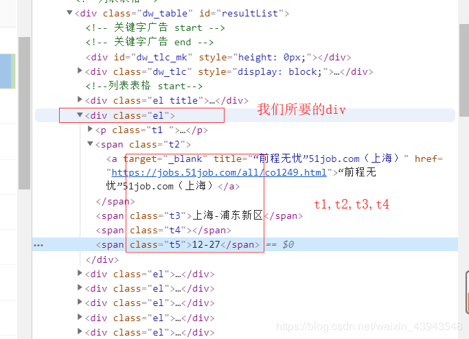

目录
@(目录)
本章同样是解析网页，不过使用的解析技术为XPath。
相对于之前的BeautifulSoup,我感觉还行，也是一个比较常用的一种解析方式
，
并且更加的符合我们之前的一个逻辑思维，不过看情况吧，看各位准备怎么用吧。
同样的先下载lxml插件,并且导入里面的etree
"""
XPath的学习
"""
from lxml import etree
# 案例文件
html_doc = """
<div>
<ul>
<li class="item-0"><a href="www.baidu.com">baidu</a>
<li class="item-1 one" name="first"><a href="https://blog.csdn.net/qq_25343557">myblog</a>
<li class="item-1 two" name="first"><a href="https://blog.csdn.net/qq_25343557">myblog2</a>
<li class="item-2"><a href="https://www.csdn.net/">csdn</a>
<li class="item-3"><a href="https://hao.360.cn/?a1004">bbb</a>
<li class="aaa"><a href="https://hao.360.cn/?a1004">aaa</a>
"""
html = etree.HTML(html_doc)
# 1、获取所有li下的所有a标签
print(html.xpath("//li/a"))
#2、获取指定的li标签item-0
print(html.xpath("//li[@class='item-0']"))
#3、获取指定的li标签item-0下面的a标签
print(html.xpath("//li[@class='item-0']/a"))
#4、获取指定的li标签item-0下面的a标签里面的内容
print(html.xpath("//li[@class='item-0']/a/text()"))
# 高级进阶用法
# 1、匹配属性以什么类型开头的class(starts-with())
print(html.xpath("//li[starts-with(@class,'item-')]"))
# 2、匹配里面所有相同的item-1,(contains())
print(html.xpath("//li[contains(@class,'item-1')]"))
# 3、多属性的匹配（and）
print(html.xpath("//li[contains(@class,'one') and contains(@name,'first')]/a/text()"))
# 4、按顺序来排序
# 第2个
print(html.xpath("//li[2]/a/text()"))
# 最后一个
print(html.xpath("//li[last()]/a/text()"))
# 最后一个-1个
print(html.xpath("//li[last()-1]/a/text()"))
# 小于等于3的序号li
print(html.xpath("//li[position()<=3]/a/text()"))
"""
案例：爬取《51job》相关职位信息，并保存成cvs文件格式
"""
import requests
from lxml import etree
import csv
import time
headers = {
"User-Agent": "Opera/9.80 (Windows NT 6.0) Presto/2.12.388 Version/12.14"
}
f = open("Python职位.csv", "w", newline="")
writer = csv.writer(f)
writer.writerow(['编号', '职位名称', '公司名称', '薪资', '地址', '发布时间'])
i = 1
for page in range(1, 159):
response = requests.get(f"https://search.51job.com/list/020000,000000,0000,00,9,99,python,2,{page}.html?lang=c&stype=&postchannel=0000&workyear=99&cotype=99°reefrom=99&jobterm=99&companysize=99&providesalary=99&lonlat=0%2C0&radius=-1&ord_field=0&confirmdate=9&fromType=&dibiaoid=0&address=&line=&specialarea=00&from=&welfare=", headers=headers)
response.encoding = "gbk"
if response.status_code == 200:
html = etree.HTML(response.text)
els = html.xpath("//div[@class='el']")[4:]
for el in els:
jobname = str(el.xpath("p[contains(@class,'t1')]/span/a/@title")).strip("[']")
jobcom = str(el.xpath("span[@class='t2']/a/@title")).strip("[']")
jobaddress = str(el.xpath("span[@class='t3']/text()")).strip("[']")
jobmoney = str(el.xpath("span[@class='t4']/text()")).strip("[']")
jobdate = str(el.xpath("span[@class='t5']/text()")).strip("[']")
writer.writerow([i, jobname, jobcom, jobaddress, jobmoney, jobdate])
i +=1
print(f"第{page}页获取完毕")
多学一种解析网页的方式多一种选择